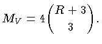
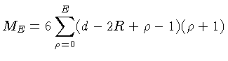
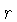

Macro Elements on the Worsey-Farin Split
The Worsey-Farin Macro Panel lets you impose symmetric
super smoothness conditions on the Worsey-Farin split and then check if
a macro element can be built with those conditions.
Because of the split faces of the macro tetrahedron the panel works
somewhat differently than the other panels. We refer to the vertices
of the macro tetrahedron as its corners and the centroids of its
faces as the face centroids. Note that both corners and face
centroids are boundary vertices of the macro tetrahedron.
To obtain the macro panel select the configuration "Worsey-Farin",
and clock on the button "macro elements" in the control panel.
The buttons on the macro panel have the following effects:
- Hide cause the macro panel to disappear. To make it
reappear click again on "macro elements".
- Draw causes the current smoothness conditions to be drawn
initially, or if the linear algebra in the drawing window has been
initialized. (Otherwise the smoothness conditions are drawn
automatically whenever they are changed.)
- Init initializes the linear algebra (and exits super
selection mode) in the drawing window.
- V initializes the linear algebra if necessary and
attempts to set the data in the corner balls. If
 is the
smoothness around the corners, then the corresponding number of data is
is the
smoothness around the corners, then the corresponding number of data is

(The code actually also includes any inactive points
(that do not enter any smoothness conditions) since these must be imposed.)
- E imposes the natural data for the six boundary edges
connecting the corners, given the vertex data. Of these there are

where  is the degree of smoothness imposed around those edges.
This number is the same as for the Clough-Tocher and Morgan-Scott Splits.
is the degree of smoothness imposed around those edges.
This number is the same as for the Clough-Tocher and Morgan-Scott Splits.
- F imposes additionally all points in the boundary faces of
the macro tetrahedron and the first  layers moving inwards, given
the vertex and edge data. A general formula for the natural
number of such data is currently unknown, and the code will simply
report the total number of conditions that have been imposed.
- Clear removes all super smoothness conditions.
- The status window gives information about the current analysis in
some situations.
Super smoothness conditions can be imposed using the text fields
in the second row of the macro panel, and the buttons to either side
of those text fields. The text fields lists the additional
degree of smoothness. So if all the text fields show zero then
the spline is the ordinary space without super smoothness conditions
at all.
The following groups of super smoothness conditions are available: